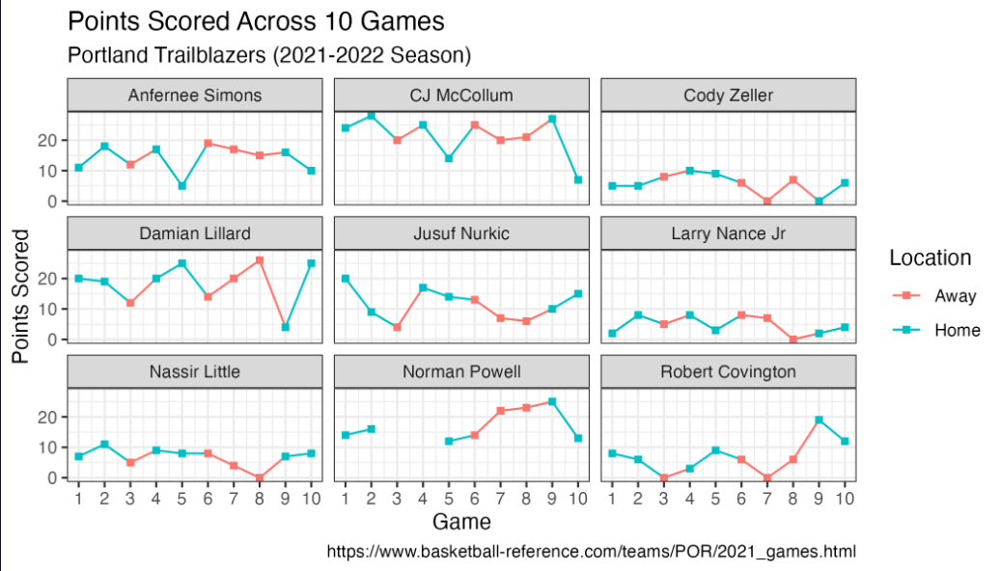
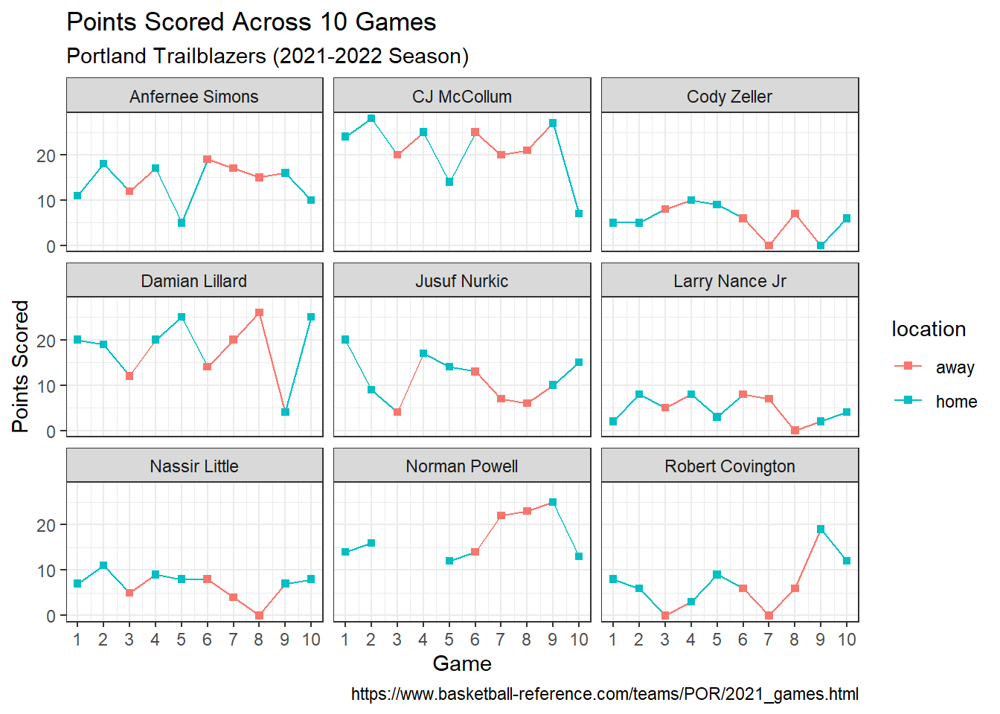

library(tidyverse)
library(scales)Tidy Basketball
Important
Please reference the Meet the toolkit: Programming exercises in course 1 (or refresher) for information and instructions on how to interact with the programming exercise below.
Getting Started
The Portland Trailblazers are a National Basketball Association (NBA) sports team. In this mini analysis, we will work with a dataset that has information on the points scored by 9 Portland Trailblazers players across the first 10 games of the 2021-2022 NBA season. If you would like to become more familiar with the game of basketball, please click here. If you would like more information on the Portland Trailblazers, please click here.
A key to these data can be found below:
| variable name | description |
|---|---|
| player | name of player |
| game1_home | points scored on game 1 on home court |
| … | … |
| game3_away | points scored on game 3 on away court |
| … | … |
| game10_home | points scored on game 10 on home court |
Read in the data below.
Packages
We’ll use tidyverse for the majority of the analysis and scales for pretty plot labels later on.
Get to know the data
Use glimpse() to get an overview (or “glimpse”) of the data. How many rows and columns are in this dataset? In addition, make note of the types of variables you are working with.
Warning
If you receive the error Error: object ‘blazer’ not found, go back and read in your data above.
Solution
glimpse(blazer)Rows: 9
Columns: 11
$ player <chr> "Damian Lillard", "CJ McCollum", "Norman Powell", "Robert …
$ game1_home <dbl> 20, 24, 14, 8, 20, 5, 11, 2, 7
$ game2_home <dbl> 19, 28, 16, 6, 9, 5, 18, 8, 11
$ game3_away <dbl> 12, 20, NA, 0, 4, 8, 12, 5, 5
$ game4_home <dbl> 20, 25, NA, 3, 17, 10, 17, 8, 9
$ game5_home <dbl> 25, 14, 12, 9, 14, 9, 5, 3, 8
$ game6_away <dbl> 14, 25, 14, 6, 13, 6, 19, 8, 8
$ game7_away <dbl> 20, 20, 22, 0, 7, 0, 17, 7, 4
$ game8_away <dbl> 26, 21, 23, 6, 6, 7, 15, 0, 0
$ game9_home <dbl> 4, 27, 25, 19, 10, 0, 16, 2, 7
$ game10_home <dbl> 25, 7, 13, 12, 15, 6, 10, 4, 8There are 9 rows and 11 columns in blazer dataset.
player is a character variable; the remaining variables are doubles.
Suppose you are asked to recreate the plot below…

Identify the variables you would need to use to recreate this plot. Can this plot be recreated with how the blazer dataset is currently formatted?
Solution
Variables in the above plot include player, game, location, and points. This plot can not be recreated with how the blazer dataset is currently formatted.
Now, think critically about how we could transform our blazer dataset to have the variables necessary to make the plot above. What would our new dataset have to look like? What R function(s) could we use to transform our data into what we need?
Solution
We have a player column in the dataset. In order to get a game, location, and points, we can use pivot_longer(), which will take this wide dataset and make it into a longer dataset. That is, we can bring the variable names of game1_home, game2_home, etc. into our dataset as values, which is needed to recreate the plot above.
See more information about pivot_longer() here. We are going to create our final dataset in steps. First use pivot_longer() to change our dataset that has 90 rows and 3 columns that are named player, game, and points.
Solution
blazer |>
pivot_longer(
cols = -player,
names_to = "game",
values_to = "points")# A tibble: 90 × 3
player game points
<chr> <chr> <dbl>
1 Damian Lillard game1_home 20
2 Damian Lillard game2_home 19
3 Damian Lillard game3_away 12
4 Damian Lillard game4_home 20
5 Damian Lillard game5_home 25
6 Damian Lillard game6_away 14
7 Damian Lillard game7_away 20
8 Damian Lillard game8_away 26
9 Damian Lillard game9_home 4
10 Damian Lillard game10_home 25
# ℹ 80 more rowsWhat are the next steps we need to take to change our dataset to recreate the plot above?
Solution
We still need to:
- remove “game” text from the
gamecolumn - separate the numeric value of game from home/away
- create a location column
Revisit the documentation for pivot_longer(). Add the argument names_prefix to your existing code above to remove the text “game” from the game column.
Solution
blazer |>
pivot_longer(
cols = -player,
names_to = "game",
values_to = "points",
names_prefix = "game"
)# A tibble: 90 × 3
player game points
<chr> <chr> <dbl>
1 Damian Lillard 1_home 20
2 Damian Lillard 2_home 19
3 Damian Lillard 3_away 12
4 Damian Lillard 4_home 20
5 Damian Lillard 5_home 25
6 Damian Lillard 6_away 14
7 Damian Lillard 7_away 20
8 Damian Lillard 8_away 26
9 Damian Lillard 9_home 4
10 Damian Lillard 10_home 25
# ℹ 80 more rowsWe now need to separate the values away from the location in the game column. Please see the documentation on separate_wider_delim here. Add to your existing code to split the game number and game location into two columns. Call the new column location. Save and name this dataset as blazer_long to use in the next section.
Solution
blazer_long <- blazer |>
pivot_longer(
cols = -player,
names_to = "game",
values_to = "points",
names_prefix = "game") |>
separate_wider_delim(game, delim = "_", names = c("game", "location"))
blazer_long# A tibble: 90 × 4
player game location points
<chr> <chr> <chr> <dbl>
1 Damian Lillard 1 home 20
2 Damian Lillard 2 home 19
3 Damian Lillard 3 away 12
4 Damian Lillard 4 home 20
5 Damian Lillard 5 home 25
6 Damian Lillard 6 away 14
7 Damian Lillard 7 away 20
8 Damian Lillard 8 away 26
9 Damian Lillard 9 home 4
10 Damian Lillard 10 home 25
# ℹ 80 more rowsSummary statistics
Let’s use the new blazer_long dataset to calculate some summary statistics for the Portland Trailblazers to learn more about their performance for these 10 games!
- Calculate the mean points scored across all players between home and away games.
Solution
blazer_long |>
group_by(location) |>
summarize(mean_points = mean(points, na.rm = T))# A tibble: 2 × 2
location mean_points
<chr> <dbl>
1 away 10.9
2 home 12.2- Now, calculate the mean points scored for the player
Damian Lillardfor both home and away games.
Solution
blazer_long |>
filter(player == "Damian Lillard") |>
group_by(location) |>
summarize(mean_points = mean(points, na.rm = T))# A tibble: 2 × 2
location mean_points
<chr> <dbl>
1 away 18
2 home 18.8- Now, create a table that counts the number of times a player scored 15 points (or more) a game versus the number of times a player scored less than 15 points a game.
Solution
blazer_long |>
mutate(points_cat = ifelse(points >= 15, "yes", "no")) |>
select(points_cat) |>
group_by(points_cat) |>
count()# A tibble: 3 × 2
# Groups: points_cat [3]
points_cat n
<chr> <int>
1 no 59
2 yes 29
3 <NA> 2Bonus Challange
Recreate the plot, using the blazer_long dataset!
Hints: The code you start with makes sure that game is appropriately treated as a quantitative variable. You will learn more about data types in the following lessons! The plot above uses theme_bw().
Solution
blazer_long |>
mutate(game = as.numeric(game)) |>
ggplot(
aes(x = game, y = points, color = location, group = player)
) +
geom_line() +
geom_point(shape = "square") +
facet_wrap(~player) +
scale_x_continuous(breaks = c(1:10)) +
theme_bw() +
labs(
x = "Game",
y = "Points Scored",
title = "Points Scored Across 10 Games",
subtitle = "Portland Trailblazers (2021-2022 Season)",
caption = "https://www.basketball-reference.com/teams/POR/2021_games.html"
)Warning: Removed 2 rows containing missing values or values outside the scale range
(`geom_point()`).